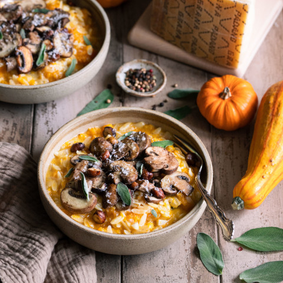

Orzo à la courge, champignons et grana padano
Ce qu’il vous faut
- 2 gousses d’ail
- 2 oignons jaunes
- 1 petite courge butternut (env. 800 g entière)
- huile d’olive
- 150 g de pâtes orzo
- 1 cube de bouillon de légumes
- 500 ml d’eau chaude
- 60 g de Grana Padano
- 200 g de champignons (de Paris, pleurotes, des bois, etc.)
- 20 g de noisettes
- sauge
- sel
- poivre
- Casserole
- Couteau
- Économe
- Poële
Préparation
Émincez l’ail et les oignons.
Épluchez la courge butternut et coupez-la en cubes.
Faites chauffer une casserole à feu vif avec 1 filet d’huile d’olive. Une fois chaude, ajoutez l’ail et les oignons émincés, quelques feuilles de sauge et faites revenir le tout 2 minutes.
Ajoutez ensuite les pâtes orzo et faites revenir le tout 1 à 2 minutes supplémentaires.
Ajoutez le cube de bouillon dans l’eau chaude et mélangez bien.
Versez le bouillon sur les pâtes orzo puis ajoutez la courge.
Faites cuire à feu moyen en mélangeant régulièrement, et en ajoutant du bouillon si c’est nécessaire, et ce jusqu’à ce que la courge soit fondante, soit environ 20 minutes.
Nettoyez les champignons et coupez-les si nécessaire. Faites-les revenir à feu moyen-vif avec un filet d’huile d’olive pendant 3-4 minutes.
Coupez vos noisettes en 2. Ajoutez-les dans la poêle aves les champignons et faites revenir le tout 3 minutes supplémentaires.
Râpez le Grana Padano et ajoutez-le à l’orzo, mélangez bien.
Servez l’orzo façon risotto dans des bols. Ajoutez les champignons et les noisettes sur le dessus, ainsi qu’un peu plus de Grana Padano et quelques feuilles de sauge fraîche. Dégustez !